Справочник по Angular и React · модуль 3 · несколько экранов, публикация, расписание
3.2
Контекст: общие данные
В этой главе данные доски перестают проходить через App в props. Список заявок, сообщение и обработчики переезжают в компонент-провайдер, а шапка и страницы получают их хуком useBoard из контекста React. Опыт с компонентом вне провайдера показывает, где контекст доступен. Второй опыт повторяет ситуацию из главы 2.4 — шапка сама получает данные, — но теперь счётчик в шапке совпадает со списком. App.tsx сокращается с 91 строки до 26.
- Категория
- React, контекст
- Уровень
- Начальный
- Что понадобится
- Проект
zayavkiпосле главы 3.1 и запущенный PocketBase с коллекциейrequests - Результат
- Файлы
board.tsиBoardProvider.tsx; страницы и шапка без props,Appсодержит только маршруты
§1Данные через промежуточные компоненты
РазбираемсяСколько props проходит через App
После главы 3.1 хук useRequests, сообщение notice и три обработчика находятся в App. Сам App из них использует только notice. Остальное он передаёт дальше: 14 props шапке и трём страницам. BoardPage часть полученного тоже передаёт дальше — в RequestForm и RequestCard.
Передачу значения через компоненты, которым оно само не нужно, называют пробросом props (prop drilling). Пока уровней два, проброс заметен только по длине App.tsx. С каждым новым уровнем растёт число мест, где нужно дописать prop и его тип, когда у данных появляется новое поле или новый обработчик.
Объявление жильцам дома можно передать по цепочке: первая квартира передаёт листок второй, вторая — третьей. Можно повесить его на доску у входа в подъезд, и каждый, кому оно нужно, прочитает его сам. Квартиры, которым объявление не нужно, в передаче не участвуют.
Доска объявлений висит одна для всего подъезда. Контекст доступен только компонентам внутри своего провайдера: компонент вне его не получит ничего.
Контекст (context) — механизм React, который передаёт значение всем компонентам внутри определённой части дерева без props. Значение задаёт компонент-провайдер (provider), а любой компонент ниже него читает значение хуком useContext, на любой глубине.
Дерево компонентов доски с контекстом
Голубое — провайдер, который хранит данные. Зелёные компоненты читают их хуком useBoard. App и Routes между ними ничего не передают.
Контекст собирается из трёх частей: сам контекст, провайдер и хук для чтения. Первая часть — файл с контекстом.
§2Контекст и провайдер
ДелаемСоздаём контекст и переносим в провайдер данные из App
- Создайте файл контекста
В папке
srcсоздайте файлboard.ts.zayavki/src/board.ts import { createContext, useContext } from 'react' import type { NewRequest, RequestItem, Status } from './requests' export type Board = { requests: RequestItem[] loading: boolean error: string newCount: number notice: string retry: () => void handleAdd: (data: NewRequest) => Promise<void> handleNext: (id: string, status: Status) => Promise<void> handleRemove: (id: string) => Promise<void> } export const BoardContext = createContext<Board | null>(null) export function useBoard(): Board { const board = useContext(BoardContext) if (board === null) { throw new Error('useBoard вызван вне BoardProvider') } return board }
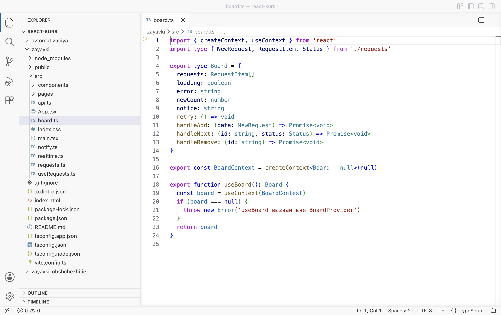
board.ts: тип, контекст и хук - Создайте провайдер
В папке
srcсоздайте файлBoardProvider.tsx. Строки 12–58 — код изApp.tsxбез изменений: хукuseRequests, сообщение, два эффекта и три обработчика.zayavki/src/BoardProvider.tsx import { useEffect, useState, type ReactNode } from 'react' import { BoardContext } from './board' import type { NewRequest, Status } from './requests' import { useRequests } from './useRequests' import { sendRequest } from './notify' type BoardProviderProps = { children: ReactNode } function BoardProvider({ children }: BoardProviderProps) { const { requests, loading, error, retry, add, next, remove } = useRequests() const [notice, setNotice] = useState('') const newCount = requests.filter((r) => r.status === 'Новая').length useEffect(() => { document.title = `Новых: ${newCount} · Доска заявок` }, [newCount]) useEffect(() => { if (notice === '') { return } const timer = setTimeout(() => setNotice(''), 5000) return () => clearTimeout(timer) }, [notice]) async function handleNext(id: string, status: Status) { try { await next(id, status) } catch (e) { setNotice((e as Error).message) } } async function handleAdd(data: NewRequest) { try { const created = await add(data) setNotice('Заявка добавлена. Отправляем уведомление…') const sent = await sendRequest(created) if (sent) { setNotice('Заявка добавлена, уведомление отправлено.') } else { setNotice('Заявка добавлена, но уведомление не отправлено: сервер автоматизации недоступен.') } } catch (e) { setNotice((e as Error).message) } } async function handleRemove(id: string) { try { await remove(id) } catch (e) { setNotice((e as Error).message) } } const board = { requests, loading, error, newCount, notice, retry, handleAdd, handleNext, handleRemove } return <BoardContext value={board}>{children}</BoardContext> } export default BoardProvider
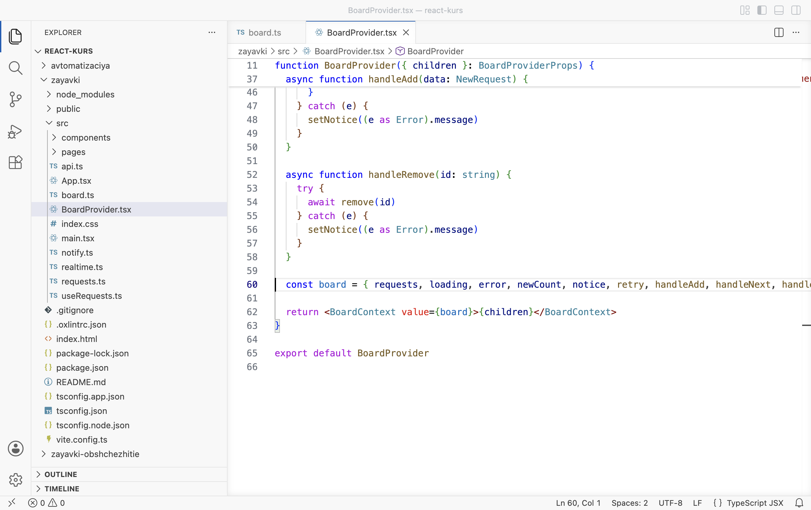
Провайдер возвращает контекст со значением board - Замените App.tsx
Замените содержимое
src/App.tsx. ДанныеAppтеперь берёт из контекста одной строкой 10 и пока передаёт страницам через props, как раньше.zayavki/src/App.tsx import { Route, Routes } from 'react-router' import Header from './components/Header' import BoardPage from './pages/BoardPage' import StatsPage from './pages/StatsPage' import RequestPage from './pages/RequestPage' import NotFoundPage from './pages/NotFoundPage' import { useBoard } from './board' function App() { const { requests, loading, error, retry, newCount, notice, handleAdd, handleNext, handleRemove } = useBoard() return ( <> <Header newCount={newCount} /> {notice !== '' && <p className="notice notice--page">{notice}</p>} <Routes> <Route path="/" element={ <BoardPage requests={requests} loading={loading} error={error} onRetry={retry} onAdd={handleAdd} onNext={handleNext} onRemove={handleRemove} /> } /> <Route path="/stats" element={<StatsPage requests={requests} loading={loading} />} /> <Route path="/requests/:id" element={<RequestPage requests={requests} loading={loading} onNext={handleNext} onRemove={handleRemove} />} /> <Route path="*" element={<NotFoundPage />} /> </Routes> </> ) } export default App
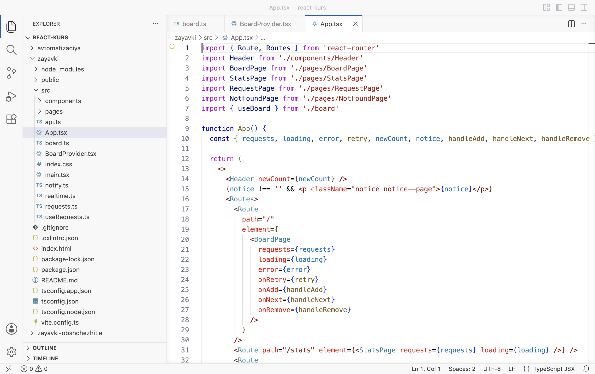
App берёт данные из useBoard - Откройте доску
Откройте DevTools (F12) на вкладке Console и обновите страницу
localhost:5173(F5). Страница пустая, в консоли ошибкаUncaught Error: useBoard вызван вне BoardProvider.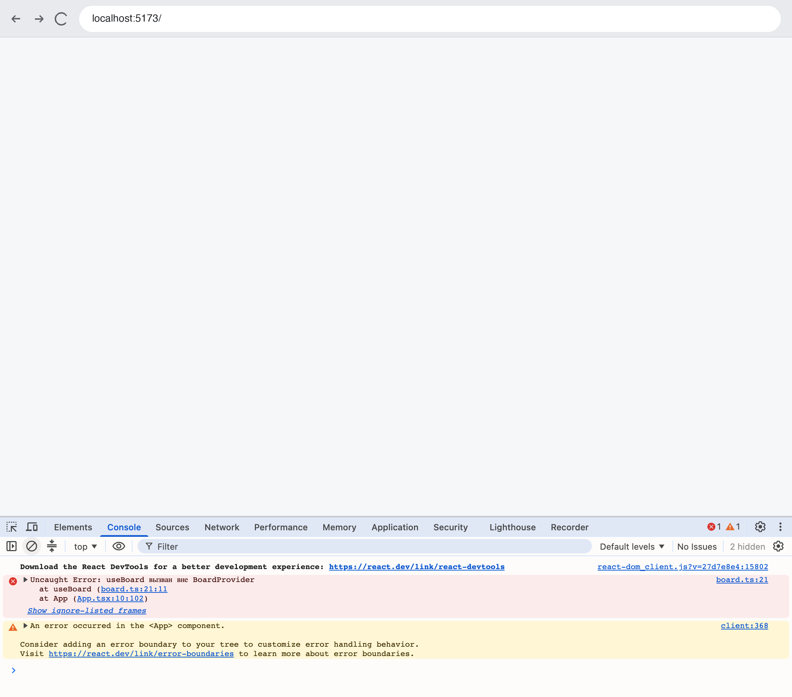
Провайдера в дереве нет: ошибка из useBoard - Подключите провайдер
Замените содержимое
src/main.tsx.<BoardProvider>оборачивает<App />внутри<BrowserRouter>.zayavki/src/main.tsx import { StrictMode } from 'react' import { createRoot } from 'react-dom/client' import { BrowserRouter } from 'react-router' import './index.css' import App from './App.tsx' import BoardProvider from './BoardProvider.tsx' createRoot(document.getElementById('root')!).render( <StrictMode> <BrowserRouter> <BoardProvider> <App /> </BoardProvider> </BrowserRouter> </StrictMode>, )
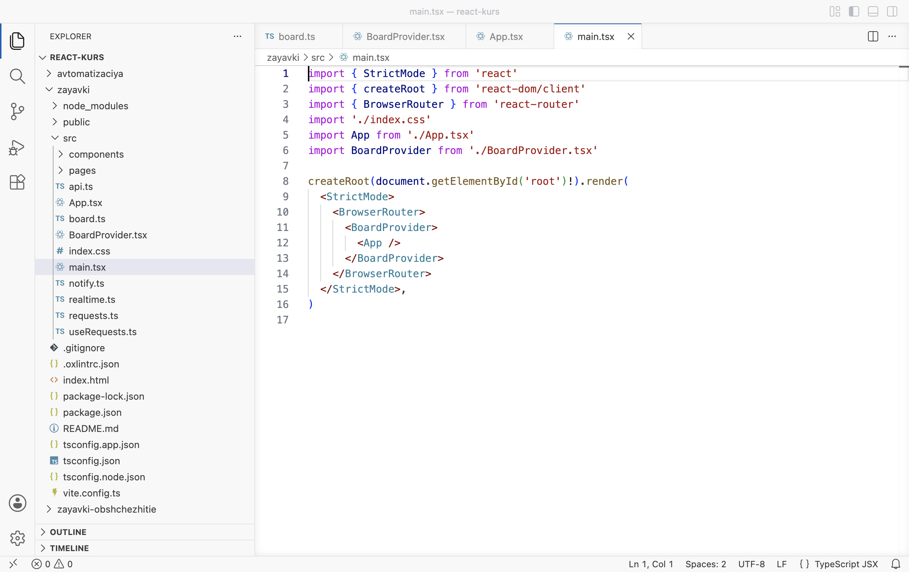
main.tsx: App внутри BoardProvider - Проверьте доску
Очистите консоль кнопкой ⊘ и обновите страницу. Доска работает, ошибок нет.
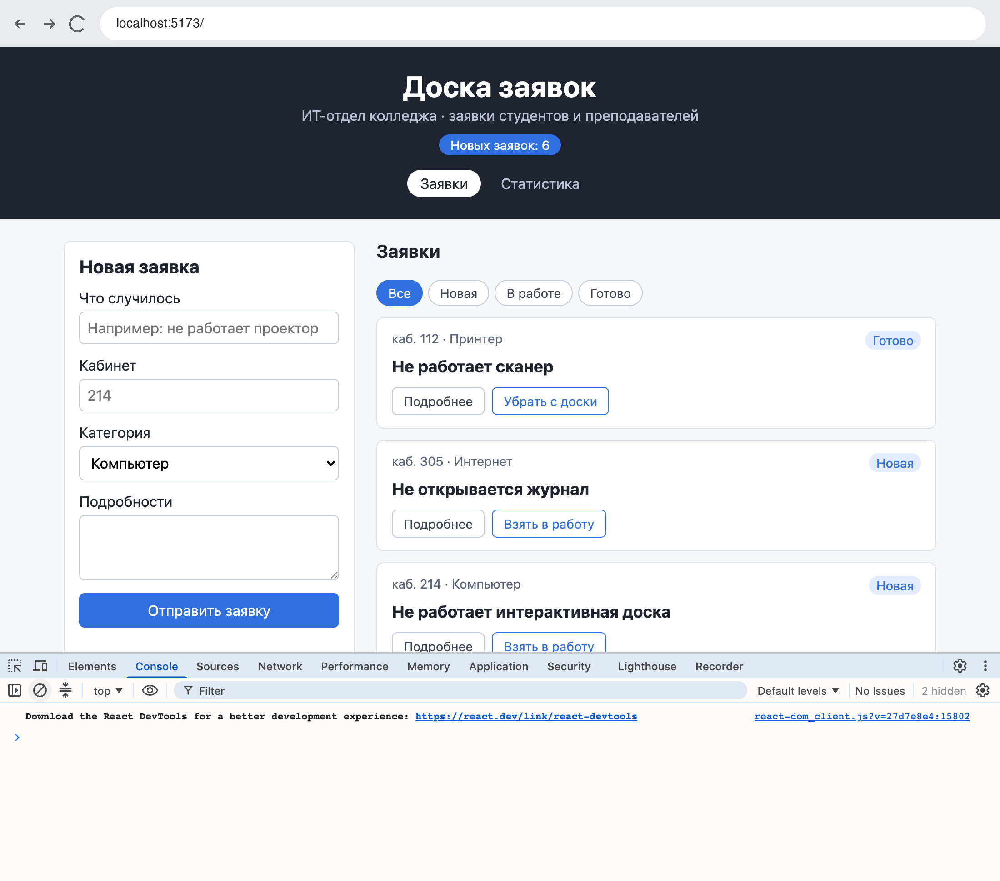
С провайдером доска работает
РазбираемсяТри части контекста
import { createContext, useContext } from 'react' import type { NewRequest, RequestItem, Status } from './requests' export type Board = { 1 requests: RequestItem[] loading: boolean error: string newCount: number notice: string retry: () => void handleAdd: (data: NewRequest) => Promise<void> handleNext: (id: string, status: Status) => Promise<void> handleRemove: (id: string) => Promise<void> } export const BoardContext = createContext<Board | null>(null) 2 export function useBoard(): Board { 3 const board = useContext(BoardContext) 4 if (board === null) { 5 throw new Error('useBoard вызван вне BoardProvider') } return board }
- 1
Тип
Boardописывает, что лежит в контексте: список, состояние загрузки и ошибки, число новых заявок, сообщение и четыре функции.Promise<void>— асинхронная функция, которая ничего не возвращает: обработчики изAppобъявлены какasync. - 2
createContextсоздаёт контекст. В угловых скобках — тип значения:Boardилиnull. В круглых — значение по умолчанию,null. Его получит компонент, над которым нет провайдера. - 3
Собственный хук для чтения контекста, по правилам главы 2.4: имя на
use, внутри — встроенный хук. - 4
useContext(BoardContext)ищет ближайший провайдер этого контекста выше по дереву и возвращает его значение. - 5
Если провайдера нет, пришло значение по умолчанию
null. Хук останавливает отрисовку ошибкой с понятным текстом — её и показала консоль в шаге 4. После этой проверки типboardсужается доBoard, и страницам не нужно проверятьnullсамим.
Провайдер — обычный компонент, который хранит данные и отдаёт их контексту:
type BoardProviderProps = { children: ReactNode 1 } function BoardProvider({ children }: BoardProviderProps) { 2 const { requests, loading, error, retry, add, next, remove } = useRequests() 3 const [notice, setNotice] = useState('') const newCount = requests.filter((r) => r.status === 'Новая').length
const board = { requests, loading, error, newCount, notice, retry, handleAdd, handleNext, handleRemove } 4 return <BoardContext value={board}>{children}</BoardContext> 5
- 1
children— особый prop: то, что записано между открывающим и закрывающим тегом компонента. Вmain.tsxмежду<BoardProvider>и</BoardProvider>стоит<App />, значитchildrenравен<App />. ТипReactNodeохватывает всё, что React может отрисовать: элементы, строки, числа,null. - 2
Провайдер получает
childrenи отрисовывает их как есть, содержимое для него не важно. Так же устроеныStrictModeиBrowserRouter: каждый оборачивает то, что ему передали. - 3
Хук
useRequestsвызывается один раз — в провайдере. Список заявок существует в одном экземпляре на всё приложение. - 4
Объект со всеми значениями контекста. Поля совпадают с типом
Board: если пропустить одно, TypeScript покажет ошибку в строке 62. - 5
Тег
<BoardContext value={board}>делает объект значением контекста для всего, что внутри, то есть дляchildren. В React 19 сам контекст служит тегом провайдера. В коде для React 18 и в старых примерах встречается запись<BoardContext.Provider value={board}>— она работает так же.
Контекст и провайдер лежат в разных файлах по правилу линтера only-export-components из .oxlintrc.json: файл с компонентом должен экспортировать только компоненты. Тогда Vite после сохранения обновляет компонент на странице без перезагрузки. board.ts экспортирует тип, контекст и хук, BoardProvider.tsx — один компонент.
export function useBoard(): Board { const board = useContext(BoardContext) if (board === null) { throw new Error('useBoard вызван вне BoardProvider') } return board }
- App вызывает useBoard
Строка 10 в
App.tsx. Дерево такое:StrictMode→BrowserRouter→BoardProvider→App. - Поиск провайдера
React идёт вверх от
App. Первый же родитель —BoardProvider, внутри которого стоит<BoardContext value={board}>.board{ requests, loading, … } - Проверка на null
Значение найдено, условие не выполнено.
- Значение возвращается
Appраскладывает объект на переменные, как результатuseRequestsв главе 2.4. - Шаг 4 без провайдера
В
main.tsxне былоBoardProvider. Поиск дошёл до корня и не нашёл провайдера,useContextвернул значение по умолчаниюnull, и хук выбросил ошибку.boardnull
Данные пришли в контекст, но App по-прежнему передаёт их страницам через props. Следующий шаг — страницы читают контекст сами.
§3Страницы читают контекст
ДелаемУбираем props страниц и шапки
- Статистика
Замените содержимое
src/pages/StatsPage.tsx. ТипStatsPagePropsудалён, данные дают строка 8.zayavki/src/pages/StatsPage.tsx import { useBoard } from '../board' import type { Category, Status } from '../requests' const STATUSES: Status[] = ['Новая', 'В работе', 'Готово'] const CATEGORIES: Category[] = ['Компьютер', 'Проектор', 'Принтер', 'Интернет'] function StatsPage() { const { requests, loading } = useBoard() if (loading) { return ( <main className="page"> <p className="empty">Загрузка заявок…</p> </main> ) } return ( <main className="page"> <h2>Статистика</h2> <p>Всего заявок: {requests.length}</p> <div className="stats"> <table> <thead> <tr><th>Статус</th><th>Заявок</th></tr> </thead> <tbody> {STATUSES.map((s) => ( <tr key={s}> <td>{s}</td> <td>{requests.filter((r) => r.status === s).length}</td> </tr> ))} </tbody> </table> <table> <thead> <tr><th>Категория</th><th>Заявок</th></tr> </thead> <tbody> {CATEGORIES.map((c) => ( <tr key={c}> <td>{c}</td> <td>{requests.filter((r) => r.category === c).length}</td> </tr> ))} </tbody> </table> </div> </main> ) } export default StatsPage
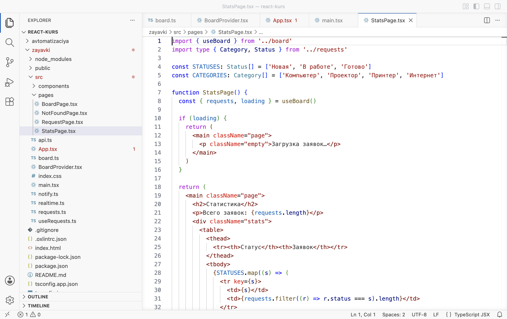
StatsPage берёт данные из контекста У
App.tsxв проводнике появилась красная метка:Appпередаёт статистике props, которых у неё больше нет. Метка исчезнет в шаге 5. - Страница заявки
Замените содержимое
src/pages/RequestPage.tsx. Функция перехода переименована вremoveAndReturn: имяhandleRemoveтеперь у обработчика из контекста.zayavki/src/pages/RequestPage.tsx import { Link, useNavigate, useParams } from 'react-router' import { useBoard } from '../board' function RequestPage() { const { requests, loading, handleNext, handleRemove } = useBoard() const { id } = useParams() const navigate = useNavigate() if (loading) { return ( <main className="page"> <p className="empty">Загрузка заявки…</p> </main> ) } const request = requests.find((r) => r.id === id) if (request === undefined) { return ( <main className="page"> <Link to="/" className="back">← Все заявки</Link> <p className="empty">Заявки с номером {id} нет: её удалили или в адресе ошибка.</p> </main> ) } function removeAndReturn(requestId: string) { handleRemove(requestId) navigate('/') } return ( <main className="page"> <Link to="/" className="back">← Все заявки</Link> <article className="card request"> <div className="card__top"> <span className="card__room">каб. {request.room} · {request.category}</span> <span className="card__status">{request.status}</span> </div> <h2>{request.title}</h2> <p>{request.details === '' ? 'Подробностей нет.' : request.details}</p> <p className="request__id">Номер заявки: {request.id}</p> <div className="card__actions"> {request.status === 'Готово' ? ( <button onClick={() => removeAndReturn(request.id)}>Убрать с доски</button> ) : ( <button onClick={() => handleNext(request.id, request.status)}> {request.status === 'Новая' ? 'Взять в работу' : 'Завершить'} </button> )} </div> </article> </main> ) } export default RequestPage
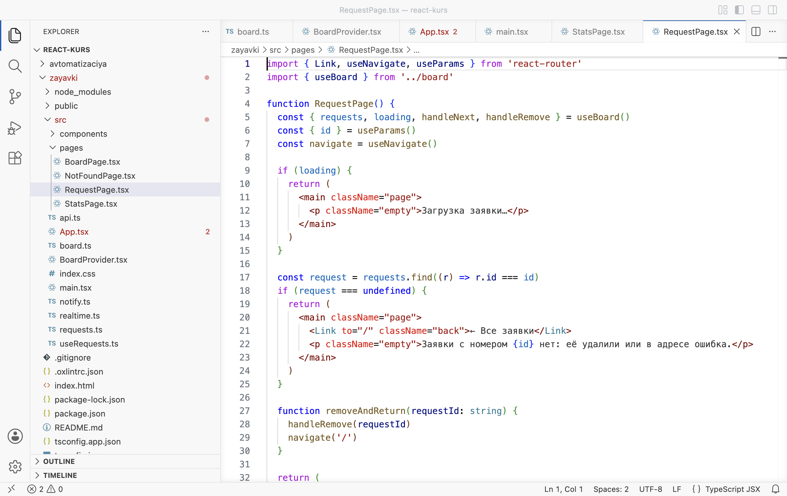
RequestPage: useBoard рядом с useParams - Доска
Замените содержимое
src/pages/BoardPage.tsx. Форма и карточки по-прежнему получают обработчики через props — от страницы.zayavki/src/pages/BoardPage.tsx import { useEffect, useState } from 'react' import RequestForm from '../components/RequestForm' import RequestCard from '../components/RequestCard' import { useBoard } from '../board' import type { Status } from '../requests' type Filter = 'Все' | Status const FILTERS: Filter[] = ['Все', 'Новая', 'В работе', 'Готово'] function BoardPage() { const { requests, loading, error, retry, handleAdd, handleNext, handleRemove } = useBoard() const [filter, setFilter] = useState<Filter>('Все') const visible = filter === 'Все' ? requests : requests.filter((r) => r.status === filter) useEffect(() => { function handleKey(event: KeyboardEvent) { if (event.key === 'Escape') { setFilter('Все') } } window.addEventListener('keydown', handleKey) return () => window.removeEventListener('keydown', handleKey) }, []) return ( <main className="board"> <RequestForm onAdd={handleAdd} /> <section className="list"> <h2>Заявки</h2> <div className="filters"> {FILTERS.map((f) => ( <button key={f} className={f === filter ? 'active' : ''} onClick={() => setFilter(f)}> {f} </button> ))} </div> {loading && <p className="empty">Загрузка заявок…</p>} {error !== '' && ( <div className="load-error"> <p>{error}</p> <button onClick={retry}>Повторить</button> </div> )} {!loading && error === '' && visible.length === 0 && <p className="empty">Заявок с таким статусом нет</p>} {visible.map((r) => ( <RequestCard key={r.id} id={r.id} title={r.title} room={r.room} category={r.category} details={r.details} status={r.status} onNext={() => handleNext(r.id, r.status)} onRemove={() => handleRemove(r.id)} /> ))} </section> </main> ) } export default BoardPage
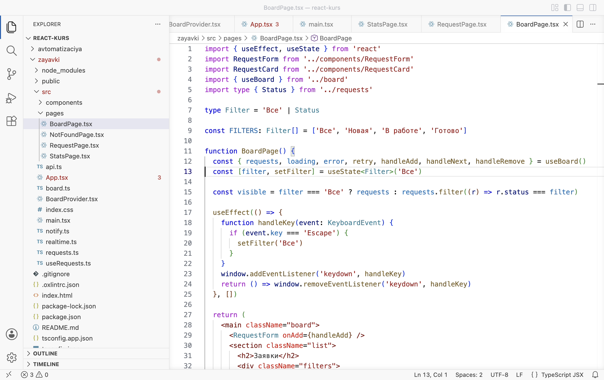
BoardPage без props - Шапка
Замените содержимое
src/components/Header.tsx.zayavki/src/components/Header.tsx import { NavLink } from 'react-router' import { useBoard } from '../board' function Header() { const { newCount } = useBoard() return ( <header className="header"> <h1>Доска заявок</h1> <p>ИТ-отдел колледжа · заявки студентов и преподавателей</p> <span className="header__count">Новых заявок: {newCount}</span> <nav className="nav"> <NavLink to="/">Заявки</NavLink> <NavLink to="/stats">Статистика</NavLink> </nav> </header> ) } export default Header
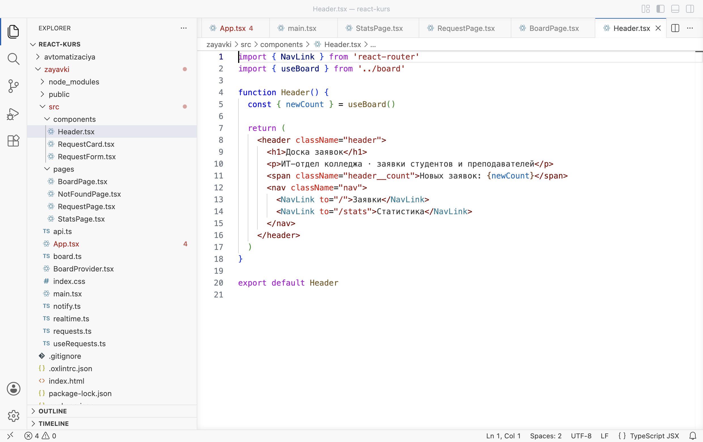
Шапка читает newCount из контекста - Замените App.tsx
Замените содержимое
src/App.tsx. В нём остались сообщение и список маршрутов.zayavki/src/App.tsx import { Route, Routes } from 'react-router' import Header from './components/Header' import BoardPage from './pages/BoardPage' import StatsPage from './pages/StatsPage' import RequestPage from './pages/RequestPage' import NotFoundPage from './pages/NotFoundPage' import { useBoard } from './board' function App() { const { notice } = useBoard() return ( <> <Header /> {notice !== '' && <p className="notice notice--page">{notice}</p>} <Routes> <Route path="/" element={<BoardPage />} /> <Route path="/stats" element={<StatsPage />} /> <Route path="/requests/:id" element={<RequestPage />} /> <Route path="*" element={<NotFoundPage />} /> </Routes> </> ) } export default App
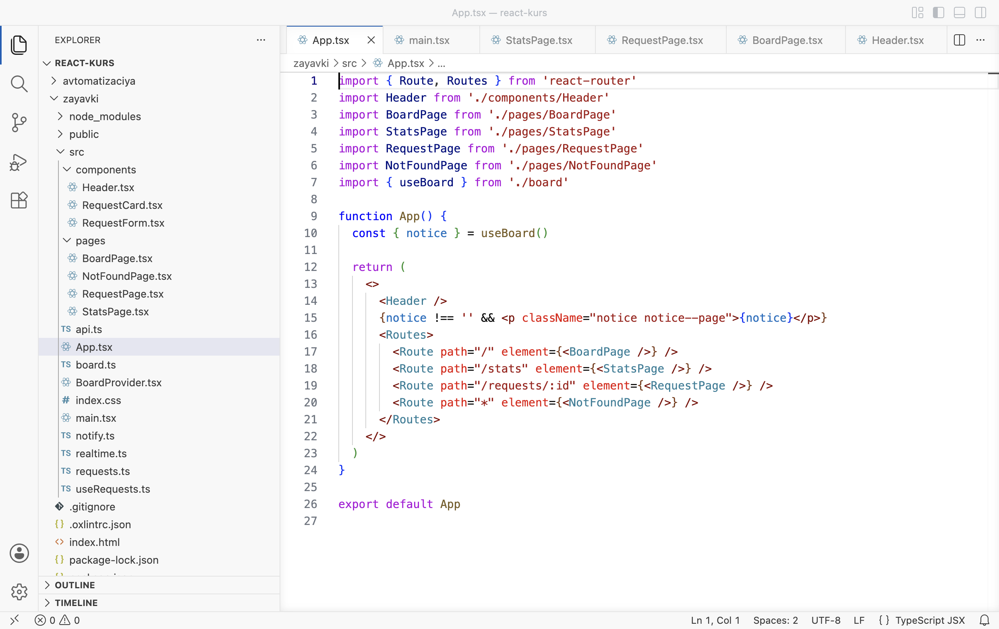
App: только сообщение и маршруты - Проверьте запросы
В DevTools откройте вкладку Network, фильтр Fetch/XHR, и обновите страницу. Запросов списка
records?sort=-createdдва: в режиме разработки StrictMode запускает эффект загрузки дважды, как в главе 2.3.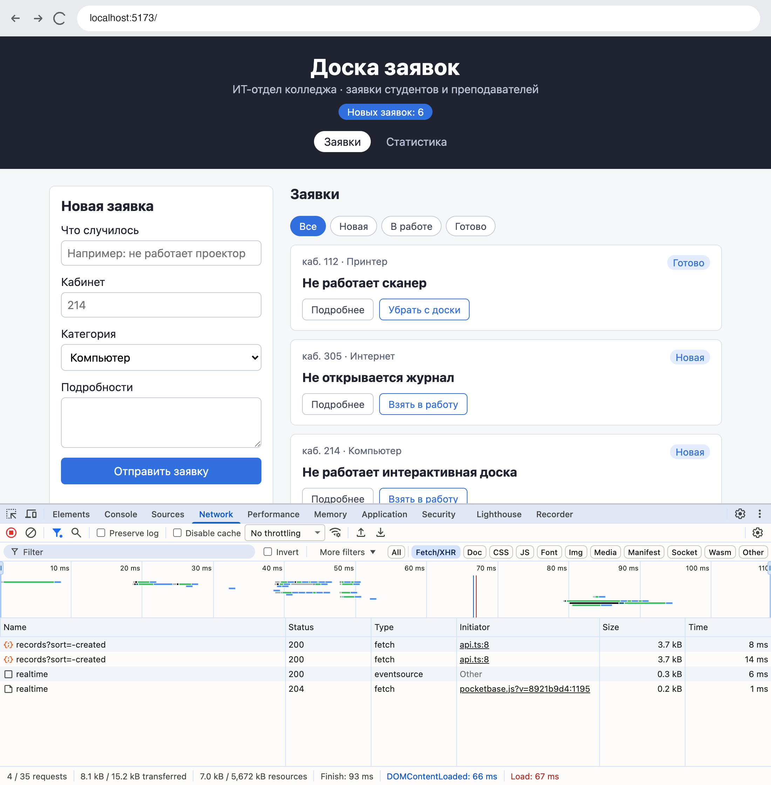
Два запроса списка: эффект загрузки в StrictMode
РазбираемсяГде теперь какие данные
Каждая страница сама называет, что ей нужно: const { requests, loading } = useBoard(). В App эти поля не упоминаются, и для новой страницы в нём меняется только строка маршрута. Список props в element больше не пишется.
RequestForm и RequestCard остались на props. Это компоненты для показа: карточка рисует заявку, которую ей дали, форма вызывает функцию, которую ей дали. Такой компонент можно поставить в другое место или в другой проект без провайдера. Контекст читают страницы и шапка — компоненты, которые работают с данными приложения.
| Компонент | До главы | После главы |
|---|---|---|
App | 91 строка: хук, сообщение, эффекты, обработчики, маршруты с props | 26 строк: notice из контекста и маршруты |
BoardProvider | — | хук, сообщение, эффекты, обработчики |
Header, страницы | получают props от App | читают useBoard() |
RequestForm, RequestCard | props от BoardPage | без изменений |
В главе 2.4 шапка сама вызывала useRequests, и её счётчик разошёлся со списком. Шапка снова получает данные сама — опыт показывает, что изменилось.
§4Один список на всё приложение
ДелаемОпыт: меняем заявку на её странице
- Откройте новую заявку
Закройте DevTools. На доске нажмите на заголовок «Не работает интерактивная доска». Статус — «Новая», в шапке «Новых заявок: 6».
До нажатия: новых 6 - Возьмите её в работу
Нажмите Взять в работу. Статус сменился на «В работе», в шапке «Новых заявок: 5».
После нажатия счётчик в шапке изменился - Откройте статистику
Нажмите Статистика. Новых 5, в работе 4.
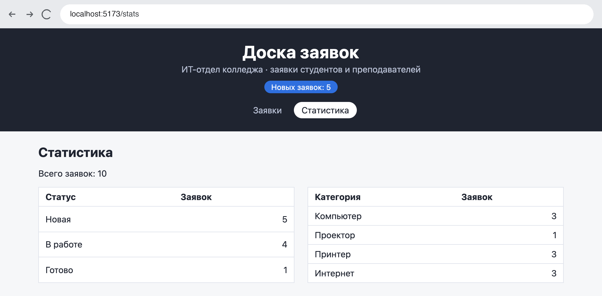
Статистика совпадает со счётчиком
РазбираемсяПочему счётчик совпал
В опыте главы 2.4 App и Header вызывали useRequests каждый у себя. Получилось два хука и два списка, и кнопка меняла только один из них. Теперь хук вызван один раз — в провайдере, а шапка, страница заявки и статистика читают один и тот же объект board.
Нажатие «Взять в работу» на странице заявки
Синий пунктир — чтение контекста. Когда провайдер отрисовывается с новым значением, React заново отрисовывает каждый компонент, который вызывает useBoard. Статистика не на экране и получает данные, когда её открывают.
Из схемы следует обратная сторона контекста: при любом изменении значения перерисовываются все компоненты, которые его читают, даже если им нужна только часть объекта. Шапка перерисуется и после смены сообщения notice, хотя показывает только число новых заявок. Для доски из десятка заявок разницы на экране нет. В больших приложениях данные делят на несколько контекстов по смыслу, чтобы изменение одного не задевало читателей другого.
Контекст подходит не для всего состояния. Последний раздел — что куда класть.
§5Что хранить в контексте
РазбираемсяКонтекст, состояние страницы и props
В контекст кладут данные, которые нужны нескольким частям приложения и должны быть одинаковыми везде: список заявок, сообщение, действия над заявками. Состояние, которое нужно одному компоненту, остаётся в нём. Фильтр в BoardPage нужен только доске; если положить его в контекст, при каждом нажатии на фильтр перерисуются шапка и открытая страница, а фильтр перестанет сбрасываться при уходе со страницы.
| Данные | Где лежат | Почему |
|---|---|---|
| Список заявок, загрузка, ошибка, число новых | контекст BoardContext | читают шапка и три страницы |
| Добавление, смена статуса, удаление, сообщение | контекст | вызываются с доски и со страницы заявки, сообщение видно на всех страницах |
| Фильтр, клавиша Esc | состояние BoardPage | нужны только доске |
| Поля формы, раскрытие «Подробнее» | состояние RequestForm, RequestCard | нужны одному компоненту |
| Заявка для карточки, обработчик для формы | props от BoardPage | компоненты показа не зависят от провайдера |
| Номер заявки из адреса | useParams | значение хранится в адресной строке |
Доска заявок работает только на компьютере, где запущен PocketBase. Глава 3.3 собирает приложение в готовые файлы и публикует его на GitHub Pages; для этого используется приложение без своего сервера — «Мониторинг сайтов группы».
§6Частые ошибки
Сообщения получены в проекте zayavki: ошибки типов — командой npx tsc -b, ошибка React — в консоли браузера.
| Что видно | Почему | Что сделать |
|---|---|---|
Пустая страница, в консоли Uncaught Error: useBoard вызван вне BoardProvider | Компонент с useBoard стоит вне <BoardProvider> или провайдер не подключён | В main.tsx обернуть <App /> в <BoardProvider> |
error TS2322: Type '{ requests: RequestItem[]; loading: boolean; }' is not assignable to type 'IntrinsicAttributes'. | Компонент больше не принимает props, а App их ещё передаёт | Убрать props из тега в App.tsx |
error TS2339: Property 'remove' does not exist on type 'Board'. | Из контекста берётся поле, которого нет в типе Board | Взять поле с именем из типа: handleRemove; новое поле добавить в тип и в объект board |
| Страница пустая, ошибок в консоли нет | В провайдере пропущен {children}: <BoardContext value={board} /> | Вернуть {children} между тегами контекста |
| Счётчик в шапке не совпадает со списком | Компонент вызывает useRequests сам вместо useBoard | Вызывать useRequests только в провайдере |
§7Проверьте себя
Что такое проброс props и почему он мешает?
Передача значения через компоненты, которым оно не нужно. Каждый промежуточный компонент должен объявить prop и передать его дальше, и при изменении данных правок становится больше.
Назовите три части контекста и файлы, где они лежат.
Контекст BoardContext (createContext) и хук useBoard — в board.ts; провайдер BoardProvider — в BoardProvider.tsx.
Что получит useContext(BoardContext) в компоненте, над которым нет провайдера?
Значение по умолчанию из createContext — null. useBoard в этом случае выбрасывает ошибку.
Что такое children в BoardProvider?
То, что записано между <BoardProvider> и </BoardProvider> в main.tsx, — элемент <App />.
Почему в опыте §4 счётчик в шапке изменился, а в опыте главы 2.4 — нет?
Сейчас useRequests вызван один раз в провайдере, и все читают один список. В главе 2.4 у шапки был свой вызов хука и свой список.
Почему фильтр не кладут в контекст?
Он нужен только доске. В контексте он вызывал бы перерисовку шапки и страницы при каждом нажатии и сохранялся бы при уходе со страницы.
Нужна страница «Мои заявки» с заявками кабинета 214. Что она возьмёт из контекста и что из него не понадобится менять?
Страница вызовет const { requests, loading } = useBoard() и отфильтрует список по room === '214'. В board.ts, провайдере и App меняется только строка маршрута в App.
Шпаргалка
export const BoardContext = createContext<Board | null>(null)useContext(BoardContext) + проверка на null<BoardContext value={board}>{children}</BoardContext><BoardProvider><App /></BoardProvider> в main.tsxconst { requests } = useBoard()ReactNodeИтог главы
Контекст передаёт значение всем компонентам внутри провайдера без props и избавляет от проброса props через компоненты, которым они не нужны. Контекст собирается из трёх частей: createContext со значением по умолчанию null и хук useBoard с проверкой на null в board.ts, провайдер BoardProvider с хуком useRequests, сообщением и обработчиками, который оборачивает <App /> в main.tsx и отдаёт объект board тегом <BoardContext value>. Шапка и страницы читают данные сами, App сократился до маршрутов, компоненты показа остались на props. Список заявок существует в одном экземпляре, поэтому изменение на странице заявки сразу видно в шапке и статистике; при любом изменении значения перерисовываются все читатели контекста. В контекст кладут данные нескольких страниц, а состояние одного компонента остаётся в нём.
Источники
- react.dev — Passing Data Deeply with Context
- react.dev — createContext
- react.dev — useContext
- react.dev — Passing JSX as children